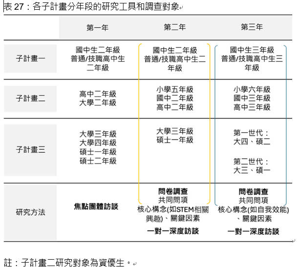

研究工具暨調查對象
各子計畫分年段的研究工具及調查對象，其中子計畫一主要調查對象為一般國高中學生，並分年進行問卷調查與訪談，據此進行國中二年級至大學一年級學生縱向的發展追蹤；子計畫二針對資優學生及特殊表現學生如獲奧林匹亞獎項之學生，並參考生涯發展研究中提及資優學生的提早定向現象，納入小學五六年級的學生進行調查，進行小學五年級至大學一年級資優學生的發展軌跡與影響其生涯發展因素之探究。
子計畫三則針對大三延伸至碩二，並納入不同世代的調查，可做為跨世代比較之分析比較，結合本計畫所建置之平台，蒐集資料與針對各子計畫間共同題目進行比較，問卷調查實施是從第二年至第年每個子計畫針對所有的研究對象都會在問卷保留這些共同題目，以作為縱向和橫向的統計分析所需的連結 (linkage)。
為了深入探討學生在國高中、資優生教育和高等教育階段選讀 STEM 領域的關鍵因素和各層面 (個人、環境-家庭和學校、社會) 因素間的相互影響，將在每個子計畫都加入不同的題目於問卷，來調查不同就學階段學生在生涯選擇時特定目標引領下對STEM自我效能和興趣的呈現情形，不僅能讓三個子計畫間有效率地進行橫向連結，也能促進三個子計畫之間的連結性、差異性與互補性。
